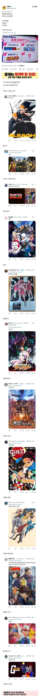

일본, 한국에서 화제라는 4대 애니 논쟁
댓글
귀칼은 전투 액션 작화 원툴이라 스토리가 사실 너무 빈약함
나도 진격거에 한 표
'소년이 친구들과 능력써서 성장한다' 라는 소재는 드래곤볼에 수렴함.
슬램덩크가 안 껴? 하다가 후보들보고 끄덕...
영향력 - 드래곤볼, 포켓몬 따로 두고
우리나라 기준 - 원나블헌
순수 애니로만 보면 퀄리티 스토리 다잡은 강연금이지
평점도르가 아니라서 강연은 후보급이 적절할 듯
코난
포캣몬이 아닐까 파과력으로 치면
헌헌은 사실상 유기 아님?
블리치임 반박은 안받음
소년애니라면 진격은 걍 빠지는게 맞지않나
당연히 에반게리온이지
야간병동이 없네..
??????????
체급도르로 하면 포켓몬이지
포켓몬은 근본이 게임이라 제외
진격거나 귀칼이 들어가야하는데 귀칼에 한표 얘는 소년만화 애니가 세울수있는 최고의 기록을 세워버림
걍 드래곤볼 밑에 원나블만 하나로 묶자.
그 '블' 때문에 정리가 안되고 자꾸 싸우는거임.
저기에 낄자격이 있냐 없냐 동급이다 아니다 등등
일본내에서 애니로만 따지면 코난의 인기가 원피스나 드래곤볼도 압살함
유포터블이 진짜 대단하긴 하네
애니 하나로 저 밸류에 언급이 되네 ㅋㅋ
앞에 3개 만화는 초장기 인기 연재 만화임 그럼 블리치가 맞음 귀칼은 비교적 짧음 꼽으면 연재 이어가던가 무잔 = 광역시 대빵인데 다른지역 빌런나와서 연재 더 해야지 ㅋㅋ
강철이지
완결이 안났으면 언급하는것 자체도 말도 안됨
그리고 완결이 났더라도 용두 니애미면 언급하는 것 자체도 말이 안됨
중간 지점 어디에서 봐도 계속 보게끔 만드는 애니 아닐까
강연이지
헌험
슬램덩크지 이건
체급만치면 포켓몬이긴함 ㅋㅋ
개인적으론 강철이나 슬램덩크
맘에 안들지만 영향력도르로 보면 포켓몬/코난이 맞지않나싶네 다른것도 물론 명작이지만 상징성 파급성 지속성 이런거 다 따져보면 포켓몬이랑 코난정도가
체급을 생각하면 포켓몬인데 나는 강연금 뽑을래
원피스 나루토가 아래에 껴주면 감사해야할판
ㅡ코믹스랑 애니 모두 포함하면
블리치 헌헌중에 하나일득한데 헌헌은 연재 안되는거때매 블리치가 맞는듯
세대별로 나눠야지
솔직히 드래곤볼이 암만 현역 뛴다 해도 원피스랑 놓고보면 삼촌급인데
나루토가 그정돈가?
쟁쟁하네
이 글 볼때마다 불타오르는데 불타는 이유가
소년만화 '애니' 꼽는데 만화랑 애니 둘다 섞어서 꼽는사람이 많음
애초에 본문 글 조차도 만화로서의 위상으로 드,원,나 뽑아놓고는..
(개인적으로 애니로써 드래곤볼은 뱅크샷 및 루즈한 진행때문에 좋은점수 못주겠음)
인기 소년만화는 연재도 길어서 애니도 긴호흡으로 제작하는데 그걸 다 좋은작화로 쭉 이어나갈라면 돈이 미친듯이 들기에 집중할땐 하고 포기할땐 포기해서 진행함
그래서 애니만으로 따지면 전체적으로 안정적이게 작화를 뽑은 강철이랑 헌헌,진격거를 높게주고싶음
작화로만 따지면 귀칼도 있지않냐? 하는데 개인적으로 안좋아해서 ㅋㅋㅋ